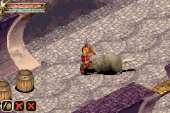
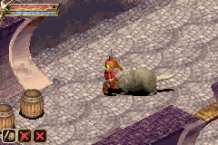

Baldur's Gate: Dark Alliance

Complete on 2019-10-19
4 / 5
Release Date: Feb 10, 2004
Meta Score: 76
Screenshots
 

Notes
Baldur's Gate: Dark Alliance is a fairly straightforward hack and slash ARPG. You explore various dungeons on flimsy RPG premises, hack through hundreds of monsters and find loot and level up. It's pretty solidly built for a GBA game.
Combat is not eartch shattering but has a little nuance, you can block (and blocking is a good idea) so it avoids being totally button mashy. Ranged attacks seemed awkward and mostly only useful for hitting enemies that run away from you. I picked the warrior so didn't engage much with the magic part of the game. You can abuse doorways to get cheap hits on enemies, which is classic ARPG really. In the end it mostly boils down to block and hit.
For some reason, the game forces you to run manually back to town any time you want to go to a shop, or need to get more plot from the NPCs. For example, you are forced to run through the initial tavern cellar at least three times, and it's totally linear. Really could have used a shortcut back to the beginning, or a Town Portal mechanic. Eventually shortcuts do show up but it could have used some kind of fast travel I think.
You have to manually save, and death takes you back to your last manual save. Not a massive fan of that but it could be worse.
About 90% of the plot (what's really going on) is dropped in one exposition dumb right at the end of the game. It gets quite repetetive towards the end too. No credits too.
Overall a flawed game, but a decent take on a genre I like and mostly unique on the GBA, so it earns points from me for that.
P.S. I think I spotted an intentional Diablo reference: the equipment shopkeeper's gretting line is the same as that of Griswold from Diablo 1: "Now, what can I do for you?"